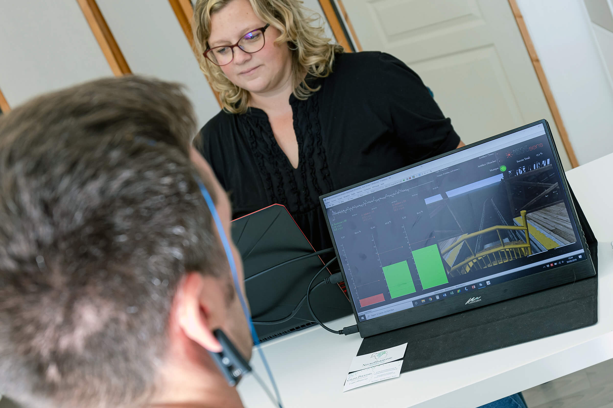

Retrouvez votre équilibre naturellement
Grâce au neurofeedback, Synapsia vous accompagne vers un mieux-être durable.
Découvrir le neurofeedback

Grâce au neurofeedback, Synapsia vous accompagne vers un mieux-être durable.
Découvrir le neurofeedbackChaque cerveau possède une formidable capacité d'adaptation. Chez Synapsia, nous vous accompagnons avec bienveillance afin de favoriser cette capacité naturelle grâce au neurofeedback.
Favoriser une meilleure autorégulation du cerveau afin de retrouver un équilibre durable.
Un accompagnement personnalisé dans un environnement calme, serein et bienveillant.
Chaque personne est unique. Les séances sont adaptées à vos besoins et à votre rythme.
Prenez rendez-vous pour un premier échange et découvrez comment Synapsia peut vous accompagner.
Prendre rendez-vous